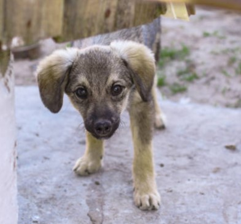
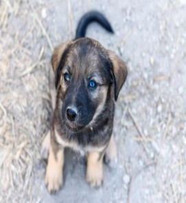
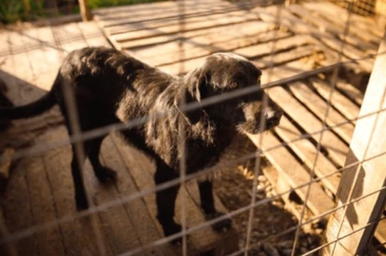

Max
Edad: 2 años
Personalidad: Juguetón y cariñoso.
Max necesita una familia activa que pueda darle paseos, atención y mucho cariño.
Cómo adoptarUn hogar, una oportunidad y mucho amor.

Muchos perros necesitan una familia que les dé amor, protección y una segunda oportunidad. Adoptar significa abrir tu corazón y ofrecer un hogar responsable a un animal que lo necesita.
Conoce a algunos de nuestros amigos y descubre cómo puedes contribuir a su bienestar.

Edad: 2 años
Personalidad: Juguetón y cariñoso.
Max necesita una familia activa que pueda darle paseos, atención y mucho cariño.
Cómo adoptar
Edad: 1 año
Personalidad: Dulce y tranquila.
Luna busca un hogar paciente donde pueda sentirse segura y recibir mucho amor.
Cómo adoptar
Edad: 3 años
Personalidad: Amigable y leal.
Toby disfruta de la compañía y espera encontrar una familia que lo cuide durante toda su vida.
Cómo adoptarAntes de adoptar un perro, es importante considerar las responsabilidades que implica cuidar de un ser vivo.
Adoptar no solo cambia la vida de un perro, también puede llenar tu hogar de compañía, alegría y momentos inolvidables.
Volver al inicio